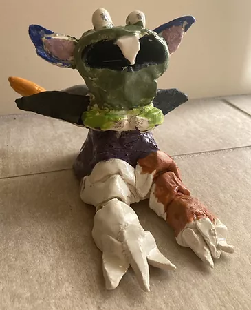

Over the years I have made some cool projects one project I did was my I search project in ninth grade. I did my I search on body language and interviwed a former FBI agent. From the interview and project I gained insight into body langauge and devloped skills on how to read body language.
Another project I made was this year 12th grade) In my cermiacs class. I made a cool monster out of clay and expressed my creativty via the project. Out of all my cermiacs projects I have made, the monster is certianly my favorite
